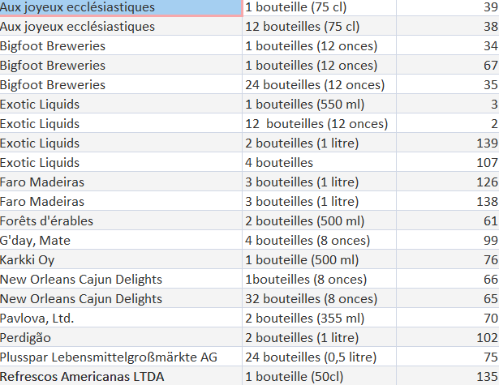

Contexte :
Pour la mission 2, nous avons été chargés d'exploiter une base de donnée grâce à une interface de type "low code" appeler QBE (Querry by example), Cette mission vise à extraire des informations importantes à partir des données de KDou afin de préparer des analyses futures plus poussées. Cette mission se décompose en plusieurs étapes : 1. Étude de la base de données 2. Analyse des données via l’interface QBE et 3. Résolution de problèmes de données. Donc, cette mission a pour objectif d'introduire l’équipe à l’exploitation des données de KDou, en insistant sur l'importance de la qualité des données et en facilitant l’extraction de premiers indicateurs pertinents.
Indicateur :
- Indicateur 1 :
- Énoncé :
- Interpretation :
- SELECT Produit.NomProd, Produit.PrixUnit, Fournisseur.Societe, Fournisseur.Ville, Fournisseur.Pays
- FROM Fournisseur INNER JOIN Produit ON Fournisseur.NoFour = Produit.NoFour
- WHERE (((Produit.PrixUnit)<=50) AND ((Fournisseur.Pays)="Italie" Or (Fournisseur.Pays)="Allemagne"));
- Indicateur 2 :
- Énoncé :
- Interpretation :
- SELECT Count(Client.SocieteCli) AS CompteDeSocieteCli
- FROM Client
- GROUP BY Client.VilleCli
- HAVING (((Client.VilleCli)="Nantes"));
- Indicateur 3 :
- Énoncé :
- Interpretation :
- SELECT Produit.NomProd
- FROM Produit
- WHERE (((Produit.QteParUnite) Like "*carton*" Or (Produit.QteParUnite) Like "*verre*"))
- ORDER BY Produit.NomProd;
- Indicateur 4 :
- Énoncé :
- Interpretation :
- SELECT Fournisseur.Societe, Produit.QteParUnite, Produit.RefProd
- FROM Fournisseur INNER JOIN Produit ON Fournisseur.NoFour = Produit.NoFour
- GROUP BY Fournisseur.Societe, Produit.QteParUnite, Produit.RefProd
- HAVING (((Produit.QteParUnite) Like "*bouteille*"))
- ORDER BY Fournisseur.Societe;
"Quels sont les produits d’Italie ou d’Allemagne vendus 50€ ou moins ? On veut les connaître noms et prix, nom du fournisseur, ville et pays d’origine."
Nous cherchons a obtenir les produit Italien et Allemand vendu a 50€ ou moins et il faut afficher le noms, le prix, le nom de fournisseur, ville et pays d'origine du produit.

"Combien y a-t-il de clients nantais ?"
Il faut que nous affichons le nombre totale de client Nantais.
| CompteDeSocieteCli |
|---|
| 3 |
"Quels sont les produits conditionnés dans du carton ou dans du verre ?"
Il faut afficher les produit qui sont conditionnés avec du cartons et du verre.
| NomProd |
|---|
| Carnarvon Tigers |
| Chocolade |
| Fløtemysost |
| Gnocchi di nonna Alice |
| Gorgonzola Telino |
| Gravad lax |
| Gudbrandsdalsost |
| Gustaf's Knäckebröd |
| knäckebrod Kala |
| Longlife Tofu |
| Mascarpone Fabioli |
| Maxilaku |
| Mishi Kobe Niku |
| Mozzarella di Giovanni |
| Nord-Ost Matjeshering |
| NuNuCa Nuß-Nougat-Creme |
| Queso Cabrales |
| Queso Manchego La Pastora |
| Raclette Courdavault |
| Ravioli Angelo |
| Røgede sild |
| Singaporean Hokkien Fried Mee |
| Spegesild |
| Tofu |
| Tunnbröd |
| Uncle Bob's Organic Dried Pears |
"Donner pour chaque fournisseur le nombre de produits qu'il propose en bouteille"
Il faut qu'on affiche le nombre de produits en bouteille pour chaque fournisseurs.
